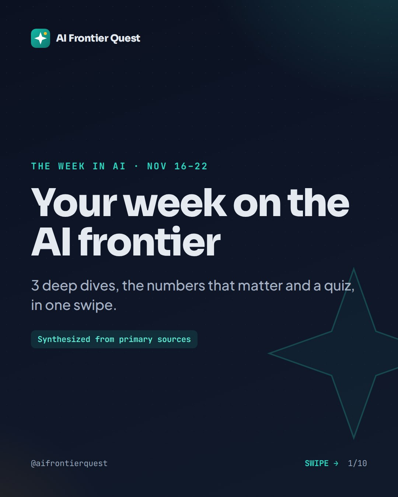
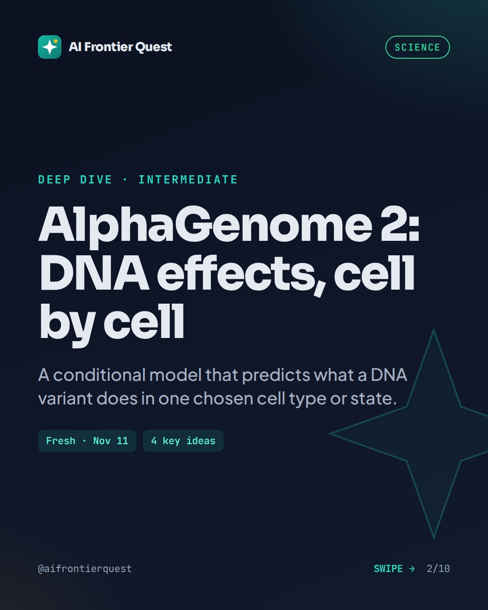
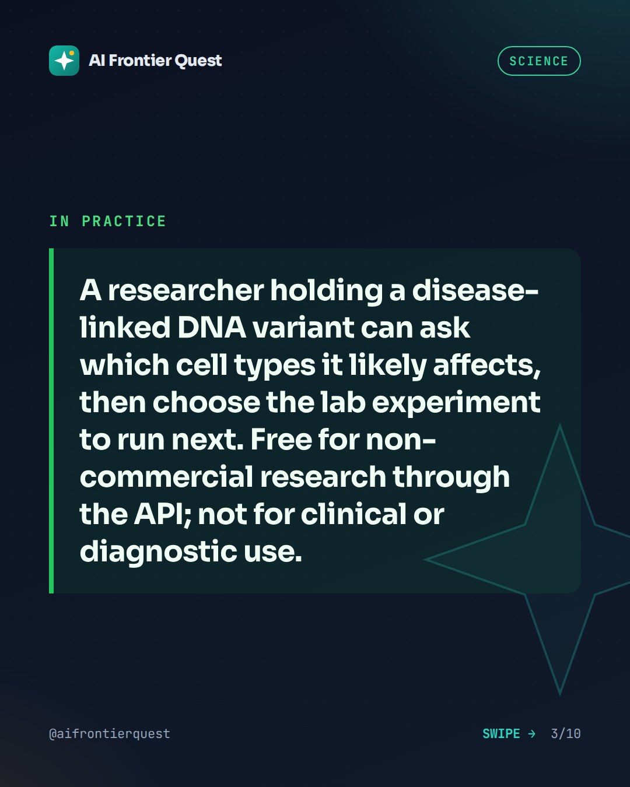
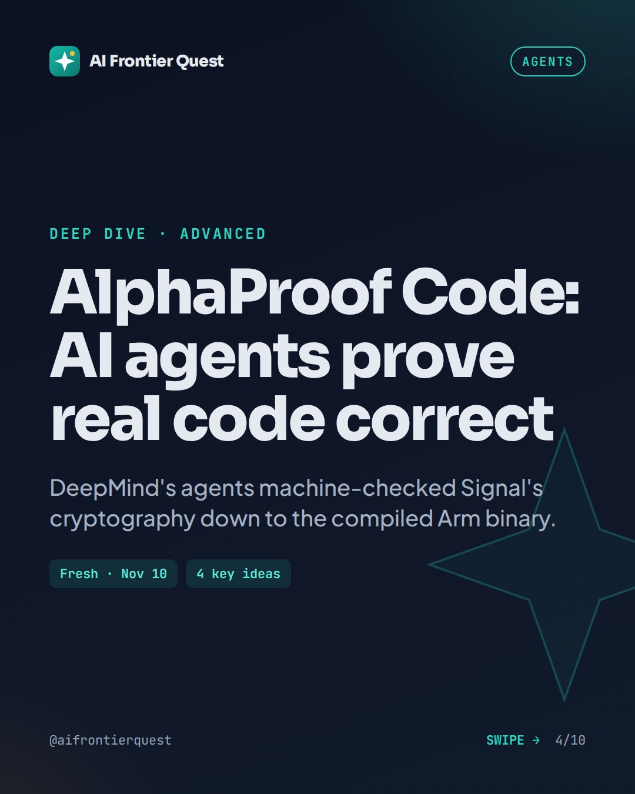
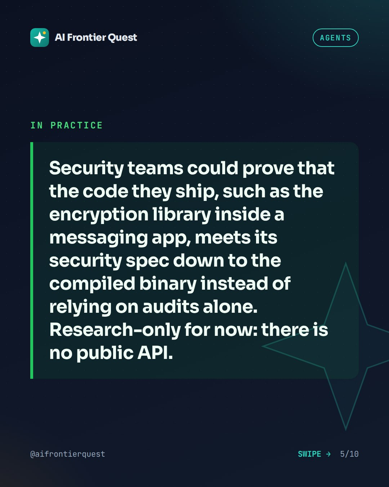
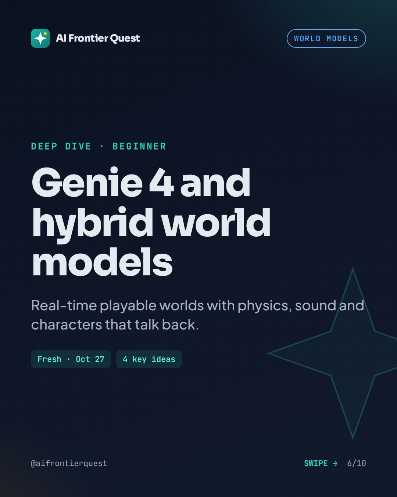
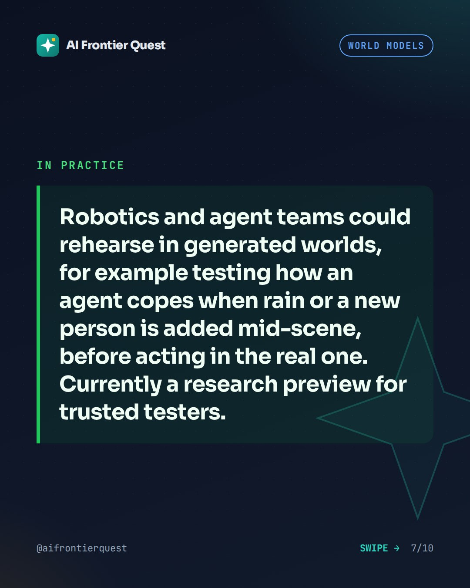
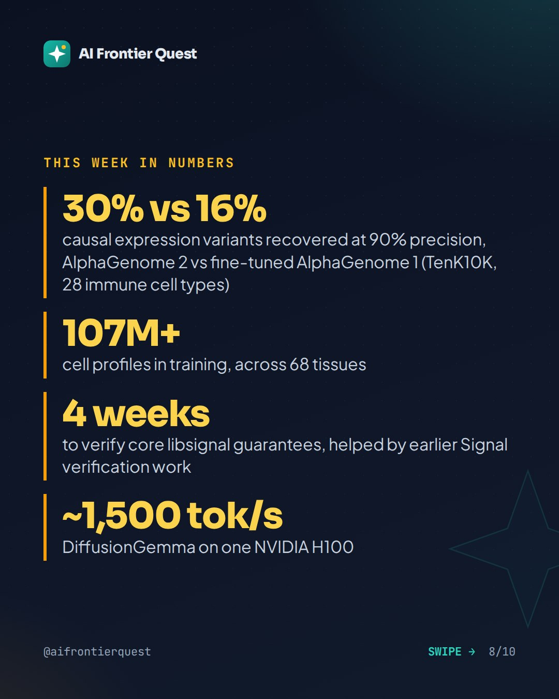
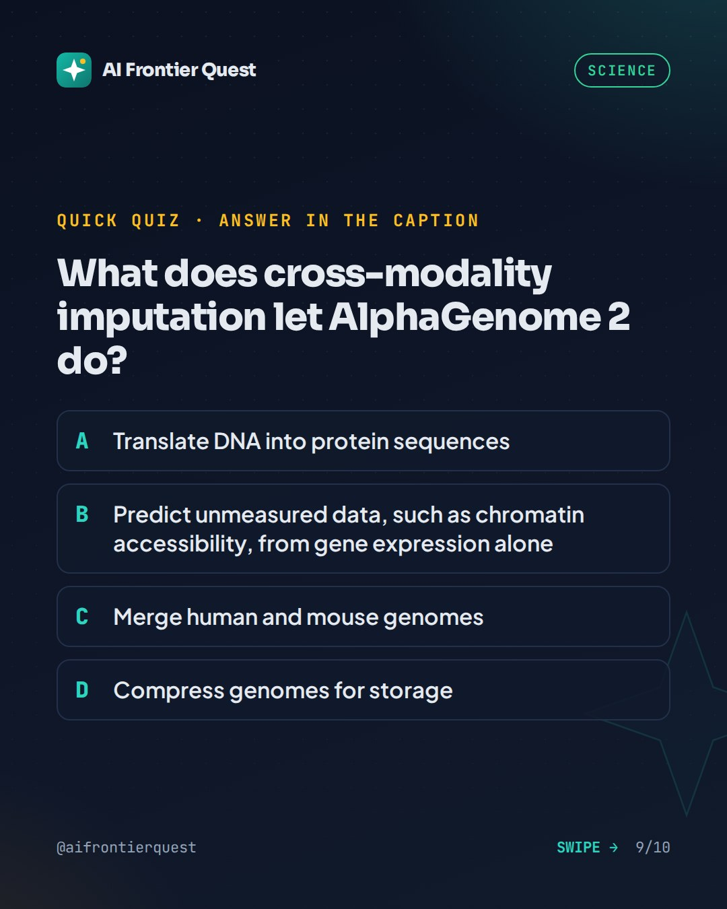
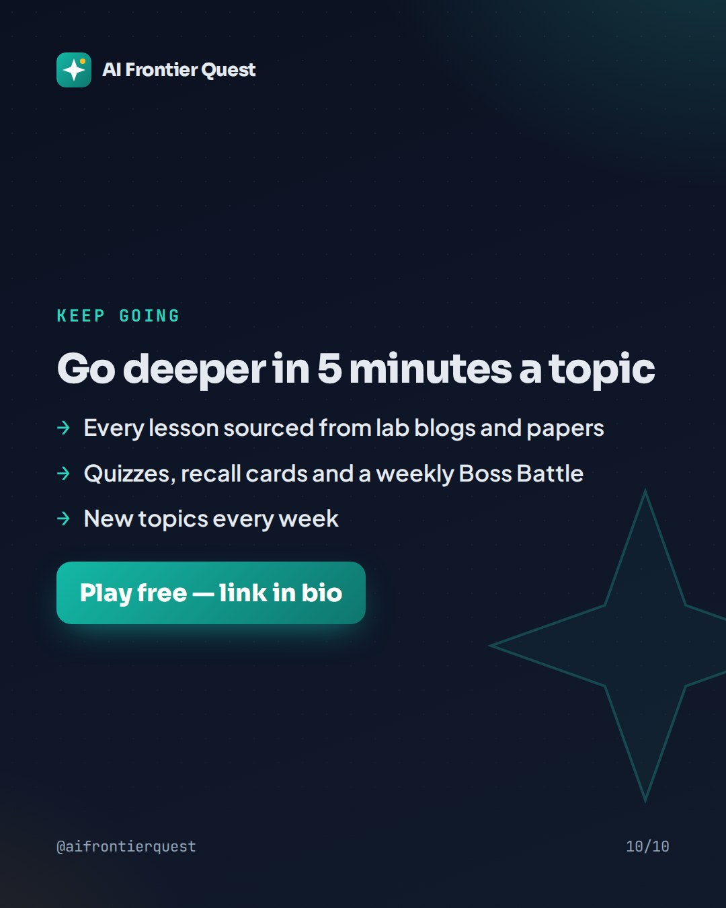

Your week on the AI frontier (Nov 16–22), in one swipe 👇 This week's deep dives: 1. AlphaGenome 2: DNA effects, cell by cell 💡 A researcher holding a disease-linked DNA variant can ask which cell types it likely affects, then choose the lab experiment to run next. Free for non-commercial research through the API; not for clinical or diagnostic use. 2. AlphaProof Code: AI agents prove real code correct 💡 Security teams could prove that the code they ship, such as the encryption library inside a messaging app, meets its security spec down to the compiled binary instead of relying on audits alone. Research-only for now: there is no public API. 3. Genie 4 and hybrid world models 💡 Robotics and agent teams could rehearse in generated worlds, for example testing how an agent copes when rain or a new person is added mid-scene, before acting in the real one. Currently a research preview for trusted testers. By the numbers: • 30% vs 16%: causal expression variants recovered at 90% precision, AlphaGenome 2 vs fine-tuned AlphaGenome 1 (TenK10K, 28 immune cell types) • 107M+: cell profiles in training, across 68 tissues • 4 weeks: to verify core libsignal guarantees, helped by earlier Signal verification work • ~1,500 tok/s: DiffusionGemma on one NVIDIA H100 🧠 Quiz: What does cross-modality imputation let AlphaGenome 2 do? Comment your answer before you peek. Answer: B. Predict unmeasured data, such as chromatin accessibility, from gene expression alone 📌 Save this for later. 🎮 Learn each topic in 5 minutes with quizzes in AI Frontier Quest. Link in bio. #AI #MachineLearning #AIforScience #AIAgents #AIFrontierQuest
Threads · topic: AI 4 new developments on the AI frontier this week 🧵 1. AlphaGenome 2: A conditional model that predicts what a DNA variant does in one chosen cell type or state. 2. AlphaProof Code: DeepMind's agents machine-checked Signal's cryptography down to the compiled Arm binary. 3. Genie 4 and hybrid world models: Real-time playable worlds with physics, sound and characters that talk back. …and more in the slides. Which one matters most for your work? ↳ AlphaGenome 2: DNA effects, cell by cell A conditional model that predicts what a DNA variant does in one chosen cell type or state. 💡 In practice: A researcher holding a disease-linked DNA variant can ask which cell types it likely affects, then choose the lab experiment to run next. Free for non-commercial research through the API; not for clinical or diagnostic use. [10 slides] ↳ Quiz time: 3 questions on this week's AI research 🧠 Reply with your answers (like 1B 2D 3A), then swipe for the solutions. Q1: AlphaGenome 2; Q2: AlphaProof Code; Q3: Genie 4 and hybrid world models. [8 slides] ↳ AlphaProof Code: AI agents prove real code correct DeepMind's agents machine-checked Signal's cryptography down to the compiled Arm binary. 💡 In practice: Security teams could prove that the code they ship, such as the encryption library inside a messaging app, meets its security spec down to the compiled binary instead of relying on audits alone. Research-only for now: there is no public API. [10 slides] ↳ The week in AI, in 5 numbers 📊 • 30% vs 16%: causal expression variants recovered at 90% precision, AlphaGenome 2 vs fine-tuned AlphaGenome 1 (TenK10K, 28 immune cell types) • 107M+: cell profiles in training, across 68 tissues • 4 weeks: to verify core libsignal guarantees, helped by earlier Signal verification work • ~1,500 tok/s: DiffusionGemma on one NVIDIA H100 …and more in the slides. Which one surprised you most? [7 slides] ↳ 6 AI terms you'll hear this week, in plain English 📚 • Chromatin accessibility: Whether a stretch of DNA is open enough for regulatory proteins to act on it. • Genetic variant: A difference in DNA sequence between individuals, such as a single-letter change. • Lean: An interactive theorem prover and language whose kernel checks every step of a proof. …and more in the slides. Save this for your next meeting. [8 slides] ↳ Genie 4 and hybrid world models Real-time playable worlds with physics, sound and characters that talk back. 💡 In practice: Robotics and agent teams could rehearse in generated worlds, for example testing how an agent copes when rain or a new person is added mid-scene, before acting in the real one. Currently a research preview for trusted testers. [10 slides] ↳ Learn every topic from this week in 5 minutes each, with quizzes and a Boss Battle: https://frontierquest.vercel.app/